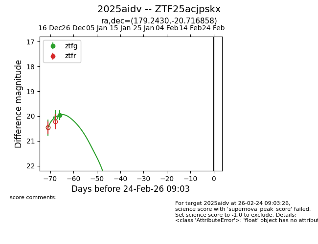
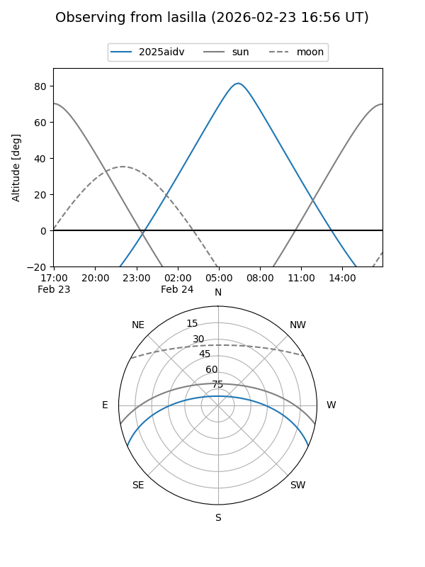
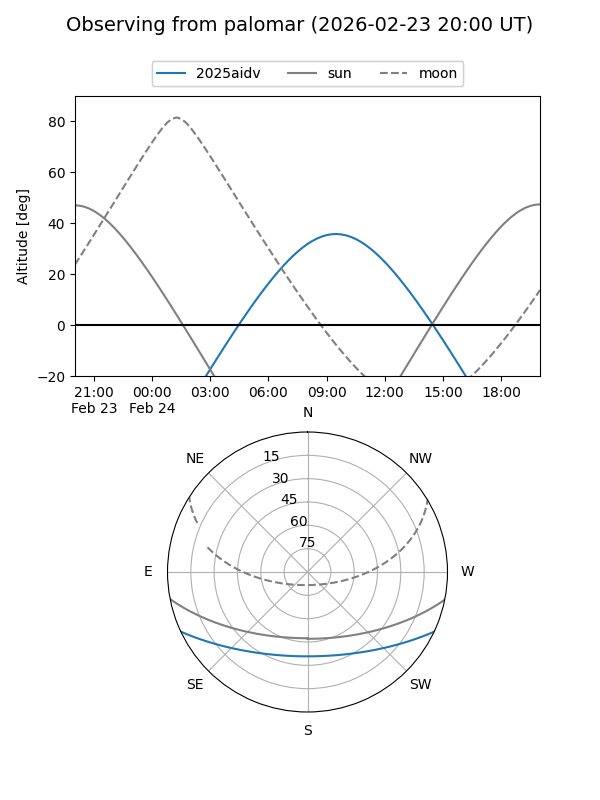
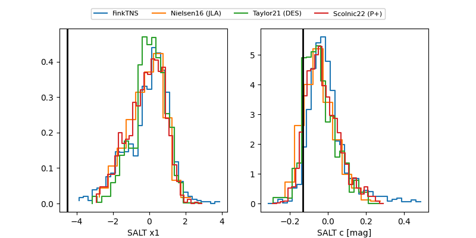

2025aidv
Target 2025aidv at 2025-12-24 20:03
Aliases and brokers:
FINK: fink-portal.org/ZTF25acjpskx
Lasair: lasair-ztf.lsst.ac.uk/objects/ZTF25acjpskx
ALeRCE: alerce.online/object/ZTF25acjpskx
TNS: wis-tns.org/object/2025aidv
YSE: ziggy.ucolick.org/yse/transient_detail/2025aidv
alt names
ZTF25acjpskx (ztf,fink_ztf)
2025aidv (tns,yse)
Coordinates:
equatorial (ra, dec) = 179.2430,-20.71686
equatorial (HMS+DMS) = 11:56:58.32,-20:43:00.69
galactic (l, b) = (286.1321,+40.37142)
Flags:
Photometry:
last ztfg=19.96
1 ztfg detections
Lightcurve

Visibility


Additional plots
